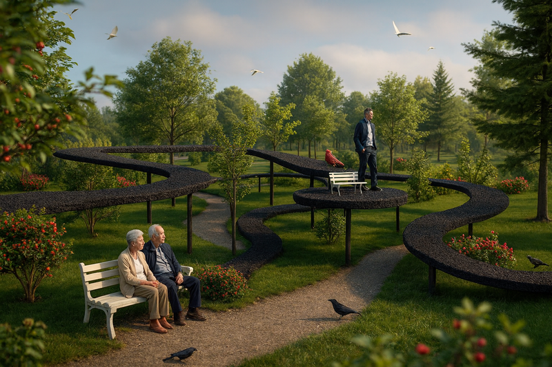
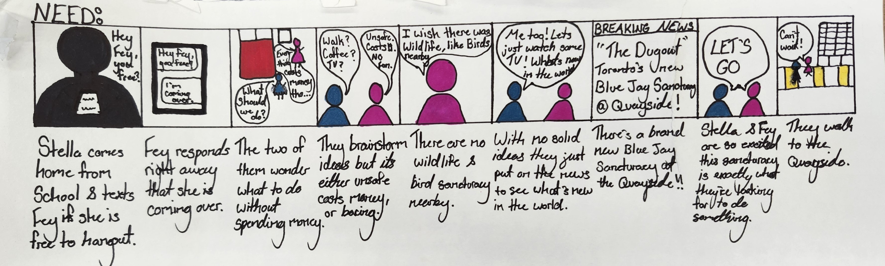

Concept visualization, AI-generated, from the original project deck.
The Problem
The brief came from Dream Corp: help build "a community." Rather than start from a fixed solution, we began with a site visit to Toronto's Quayside waterfront and interviews with seven young adults living downtown, mapping what we heard against three needs: safety, affordability, and socialization.
What came back was specific and often blunt: "I wouldn't raise a family here, I don't want my wife to be downtown alone, too many unpredictable people I can't trust"; "The expenses of living downtown feel like a constant weight on my shoulders"; "I wish I didn't have to choose between staying home alone or spending money to hang out." Those three pillars, not a predetermined concept, are what the rest of the project was designed against.
Process

Ideation ran down two parallel paths: a merchant discount/loyalty card program (the "Quayside Key") and a Blue Jay conservation garden. We dropped the card program once it became clear the garden "allowed for more service processes and a much more ambitious and exciting idea," a deliberate choice to design something physical and offline rather than another app-shaped solution.

From there, we developed the garden down to plant-level detail: a living floorplan selecting species for year-round food, shelter, and wildlife attraction across all four seasons; four public-facing services (a seed-paper scavenger hunt keyed to real points of interest, rotating seasonal events, school partnerships, and an on-site gift shop with an "Adopt a Blue Jay" program); and a monthly public program calendar. We also walked the design through an actual visitor journey: a two-person prototype story, "Lauren & Fey," following two strangers who meet through the scavenger hunt and become regular visitors, mapped against four concrete touchpoints from first discovery to ongoing community connection.

Feasibility work covered lighting and security, staffing, accessibility (wheelchair access, braille signage, a heated ramp), and funding through a Parks & Gardens budget and government grants.
Outcome / Reflection
By our own account, the shift to a physical, built-space concept pushed the work further than past projects had: "our blueprint mapping also showed a level of detail which we had not achieved in previous projects... understanding the 'how' of a service makes you consider the feasibility and functionality of its parts." We were equally direct about the risk in that choice: "we were realising that our direction was the only one which implements construction of a site... we wanted to explore how service design could work outside of an app or website."